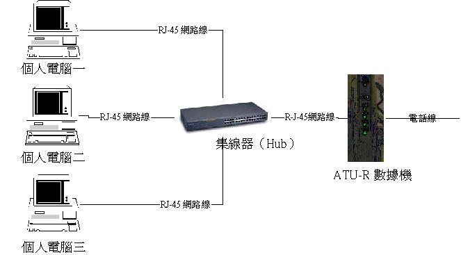

鸟哥的 Linux 与 ADSL 私房菜 


以软件仿真分享 ADSL 的带宽
最近更新日期：2002/01/27
目的与适用性
申请 ADSL 帐号
在 Windows 操作系统下安装网络卡
连接硬件配备
增加通信协议（确定网络上的芳邻工作正常）
做为主机（Server）的 PC 安装 All Aboard
做为用户端（Client）的 PC 安装 All Aboard
老问题：修改 Client 计算机的 MTU
目的：
如果你不想使用服务器（Server）的配置来挂机分享带宽的话，可以使用一些挂机分享的软件来实现带宽分享的目的。使用挂机分享的软件时，挂机的方法与使用 Hub 同时连接所有的计算机是一样的，而且做为主机的机器可以不用插两块卡，仅只要一块网络卡就可以达到挂机分享的目的。
下装：
VBird 是在很久以前拿到这套试用软件的，VBird 也不知道这家公司还在不在....你可以在这个网页上下装，请按这里下装。
适用性：
基本上，本方法适用于只有一个固定 IP 的情况（例如 Giga ADSL），当然，也适用于其他的计时制拨接 ADSL 系统。
缺点：
虽然这个是最便宜的方式，而且也不需要更新您的系统，因为在 Windows 98 底下就可以进行这一种带宽分享罗！但是，由于这个方法是使用软件来控制硬件，所以当做为主机的 PC 有问题时，会造成等价大的困扰！并且，由于是软件来控制硬件，基本上，在传输速率方面，可能作为用户端的计算机会有较慢的情况发生！说实在的，除非您真的不愿意花时间在 Linux 或 Windows 2000 底下架设 NAT，又或者您不想要购买 IP 分享器，否则 VBird 真的不建议安装这一种带宽分享耶！
原理：
说穿了，这种方法的工作原理也不是很难，这类软件只是将你的网络卡另外再设一个子网段的虚拟 IP ，利用这个『虚拟IP』来分享你的网络带宽罢了！在 Linux 当中就有这一种方法的使用哩！
当前Hinet计时制提供同时两部计算机挂机，而Seednet则提供五部计算机挂机，另外， Giga 的 ADSL 则提供一个固定的 IP 给用户。关于 ADSL 的申请方式在此就不罗唆了，请至各服务站点查询。
基本上，连接硬件的方式与 Hub 直接连接的方式相同，所以你可以参考一下 以 Hub 挂机分享的方式那一篇

基本上，在你完成了硬件的挂机以及网络卡的安装之后，如果没有意外的话，通常 Windows 内的『网络上的芳邻』就可以工作了，亦即是你可以在你的计算机中看到你『局域网』内的所有计算机。如果不行的话，应该就是网络有点问题了。要确认问题的所在，你可以先：
确定通信协议都正常：
确认挂机设备完全没有问题：
总而言之，在安装这套挂机分享程序之前，你一定要：
先确认你的 『局域网』 没有问题，而且，
做为主机的那台计算机也可以正常的拨接上 Internet 才行！
否则如果出问题，你一定会不晓得是哪一个部分出现问题的！
做为主机（Server）的 PC 安装 All Aboard
做为用户端（Client）的 PC 安装 All Aboard
会出现一个小框框的屏面告诉你，这部计算机的 IP 情况。看看你的IP是否为 192.168.244.151，如果前面三位数字不对的话，请按
『全部释放』
『重新捉一次IP』（朝意思一样的钮就按下去吧），
那用户端应该就可以捉到你的主机了！
使用这一种仿真的方式所提供的挂机分享方式，仍然需要特别留意某些站点无法连上去，所以你就必须又要修改 MTU 值啦！如何修改？请参考前面的 Windows 2000 之修改的那一篇吧！这里就不再赘述了！
2002/ 01/27以来统计人数


Designed by VBird during 2001-2004. Aerosol Lab.